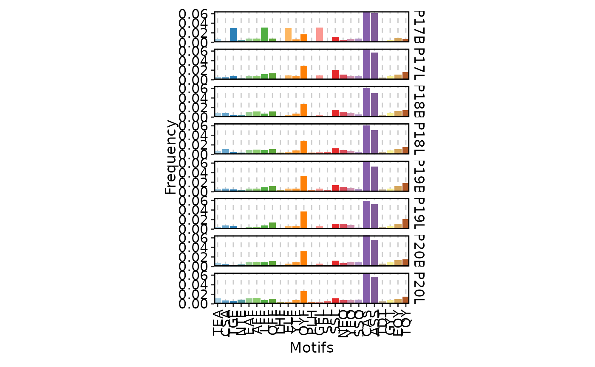
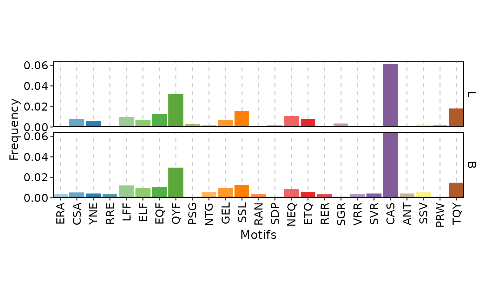
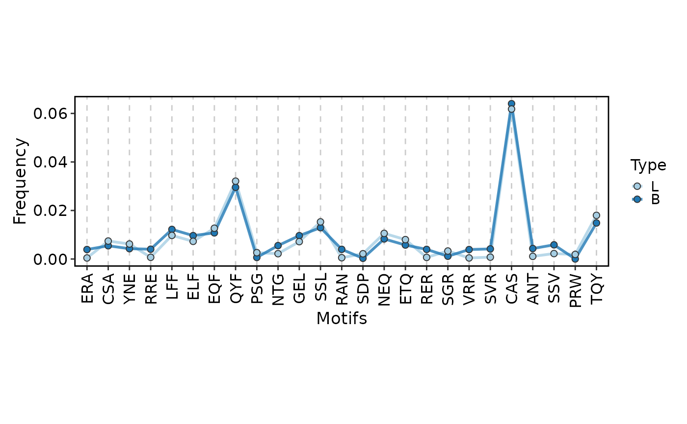
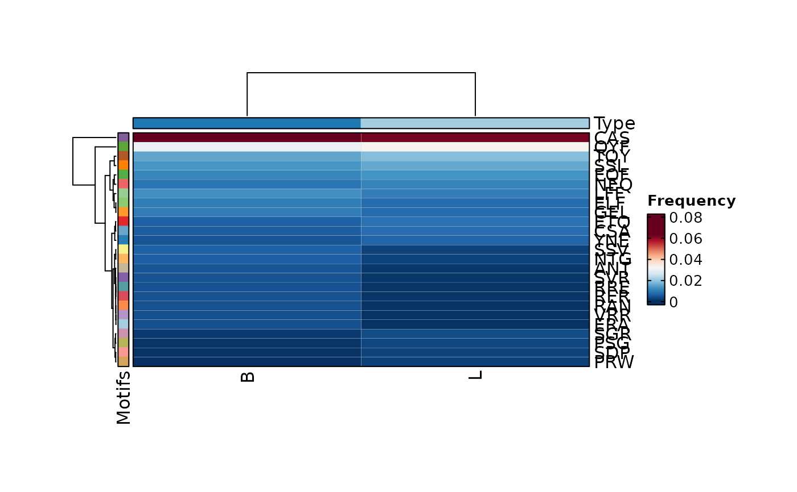

Short amino acid motifs within CDR3 sequences — termed k-mers — can reveal shared binding specificities, common structural elements, and repertoire-level sequence features that are not apparent from full-length sequence analysis alone. Specific k-mers may be enriched in responses to particular antigens, represent public TCR/BCR motifs shared across individuals, or reflect convergent recombination events.
Arguments
- data
The product of
scRepertoire::combineTCR(),scRepertoire::combineBCR(), orscRepertoire::combineExpression(). Must contain columns with CDR3 sequences (amino acid or nucleotide).- chain
Character; the TCR or BCR chain to analyze. Default is
"TRB". Common values include"TRA","TRB","TRG","TRD","IGH","IGL", and"IGK".- clone_call
Character; the column name specifying which CDR3 sequence to use for k-mer extraction. Default is
"aa"(amino acid). Use"nt"for nucleotide sequences or"strict"for strict clonotype calls.- k
Integer; the length of k-mers (motifs) to extract. Default is
3. See the K-mer length selection section for guidance on choosing an appropriate value.- top
Integer; the number of most frequent k-mers to display. Default is
25. K-mers are ranked by total frequency across all groups. Increase for heatmap visualizations; decrease for focused bar charts.- group_by
Character vector; the column(s) in
datato group samples by. Default is"Sample".- group_by_sep
Character; the separator used when concatenating multiple
group_bycolumns into a single identifier. Default is"_".- facet_by
A character vector of column names to facet the plots by. Default is
NULL. For bar plots,facet_byis set internally togroup_byand must not be specified manually (doing so will raise an error). For line plots, it can be used for additional faceting.- split_by
Character vector; column(s) in
datato split the plot by, producing separate sub-plots for each unique combination. Default isNULL.- order
A named list specifying the order of factor levels for grouping variables. For example,
list(Type = c("L", "B")). Default isNULL, which uses the order present in the data.- plot_type
Character; the type of visualization. One of
"bar"(default),"line", or"heatmap". See the Plot types section for guidance.- theme_args
A named list of arguments passed to
ggplot2::theme()for customizing the plot appearance. For bar and line plots,panel.grid.major.ydefaults toelement_blank().- aspect.ratio
Numeric; the aspect ratio (height / width) of plot panels. Default is
NULL, which uses4 / length(motifs)for bar plots and8 / length(motifs)for line plots, automatically scaling with the number of k-mers.- facet_ncol
Integer; the number of columns in the facet grid. Default is
NULL, which uses1for bar plots.- ...
Additional arguments passed to the underlying plotthis visualization function, depending on
plot_type:For
"bar":plotthis::BarPlot()For
"line":plotthis::LinePlot()For
"heatmap":plotthis::Heatmap()
Common arguments include
title,legend.position,show_row_names,show_column_names, and color palette parameters. See the respective plotthis documentation for available options.
Details
ClonalKmerPlot extracts k-mers of length k from CDR3 amino acid (or
nucleotide) sequences and visualizes their frequency across samples and
conditions. The analysis uses scRepertoire::percentKmer()
to identify the top most frequent k-mers, then displays them using bar,
line, or heatmap visualizations.
K-mer analysis is complementary to positional analysis
(ClonalPositionalPlot): while positional analysis asks "what
happens at position X?", k-mer analysis asks "what short sequence motifs
appear, regardless of their exact position?" This position-independent
perspective can capture sequence features that are distributed across
different CDR3 locations.
Note
K-mer extraction is performed by
scRepertoire::percentKmer(), which uses a sliding window across CDR3 sequences. The resulting frequencies represent the percentage of sequences containing each k-mer at least once.For bar plots,
facet_byis internally set togroup_byand must not be provided by the user.The number of possible k-mers grows exponentially with
k(20^k for amino acids), but only thetopmost frequent are displayed. Ensuretopis set high enough to capture motifs of interest.K-mer frequencies can be noisy when sample sizes are small. Consider using
split_byorfacet_byto disaggregate data rather than relying on small within-group sample sizes.For nucleotide k-mers (
clone_call = "nt"), the alphabet size is 4 rather than 20, so shorter k values (2-3) are generally appropriate.
K-mer length selection
The choice of k represents a fundamental trade-off:
k = 2 (dipeptides): Highly recurrent but often non-specific — many dipeptides appear in functionally unrelated receptors. Best for broad surveys of amino acid pairing preferences.
k = 3 (tripeptides, default): The most commonly used length. Tripeptides are long enough to capture meaningful motifs (e.g., the "CASS" motif at the start of TRB CDR3s) while being short enough to recur frequently across samples for robust statistical analysis.
k = 4 or 5: More specific motifs that are more likely to reflect genuine functional constraints or antigen-driven selection. However, longer k-mers appear less frequently, requiring larger datasets for reliable frequency estimation.
The top parameter controls how many of the most frequent k-mers are
displayed. The default of 25 provides a manageable view for bar and line
plots; increase for heatmap visualizations that can accommodate many more
motifs.
Plot types
Three visualization types are available:
"bar"(default): Bar chart of k-mer frequencies, faceted bygroup_by. Best for comparing motif usage across a moderate number of samples or conditions.facet_byis not available (set internally)."line": Line plot connecting k-mer frequencies, with each group as a separate line. Useful for visualizing trends across motifs or comparing the frequency profile shape between conditions. Supportsfacet_byfor additional faceting dimensions."heatmap": K-mer by group matrix showing frequency as color intensity. Ideal for surveying many motifs across many samples simultaneously, revealing clusters of co-enriched motifs.
See also
ClonalPositionalPlotfor position-specific CDR3 analysis (amino acid frequency, entropy, and physicochemical properties)ClonalLengthPlotfor CDR3 length distribution analysisClonalGeneUsagePlotfor V(D)J gene segment usageClonalDiversityPlotfor repertoire-level diversity metricsscRepertoire::percentKmer()for the underlying k-mer computation
Examples
# \donttest{
set.seed(8525)
data(contig_list, package = "scRepertoire")
data <- scRepertoire::combineTCR(contig_list,
samples = c("P17B", "P17L", "P18B", "P18L", "P19B","P19L", "P20B", "P20L"))
data <- scRepertoire::addVariable(data,
variable.name = "Type",
variables = factor(rep(c("B", "L"), 4), levels = c("L", "B"))
)
data <- scRepertoire::addVariable(data,
variable.name = "Subject",
variables = rep(c("P17", "P18", "P19", "P20"), each = 2)
)
ClonalKmerPlot(data)

ClonalKmerPlot(data, group_by = "Type")

ClonalKmerPlot(data, group_by = "Type", plot_type = "line")

ClonalKmerPlot(data, group_by = "Type", plot_type = "heatmap")

# }